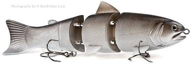
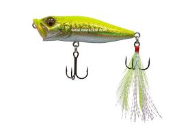
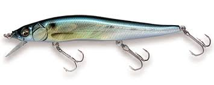
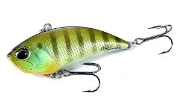
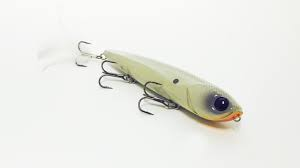
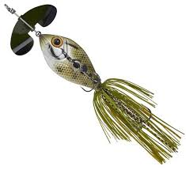

Crank Baits

A crankbait tops the choices of many bass anglers who need
a lure to cover water quickly and explore various depth zones.
Swim Baits
Swimbaits are a loosely defined class of fishing lures that imitate
fish and tend to be distinct in design from a typical crankbait.
Poppers
 The popper is an effective and proven lure designed
to move water using a concave or hollowed nose.
Jerk Bait
 As I've already said, they're generally shad or minnow shaped,
usually suspending or slow sinking. They can look a little like a lipless
crankbait, only the tow point on a lipless jerkbait is on the nose.
Lipless Crankbaits
 But basically, almost any lure with a piece of plastic or metal
poking out from the underside is a crankbait of some sort.
Walking Baits
 Walking Baits are topwater lures that are designed to display a side to side
walking action. These lures are often more subtle as they swish side to side
Buzz Baits
 A buzzbait is a specialized topwater form of a bass jig. In anglers' game plans,
it competes for play time against spinnerbaits (a midwater form of a bass jig),
and against other topwaters such as poppers, spitters, prop baits, hard stickbaits, soft stickbaits, etc.